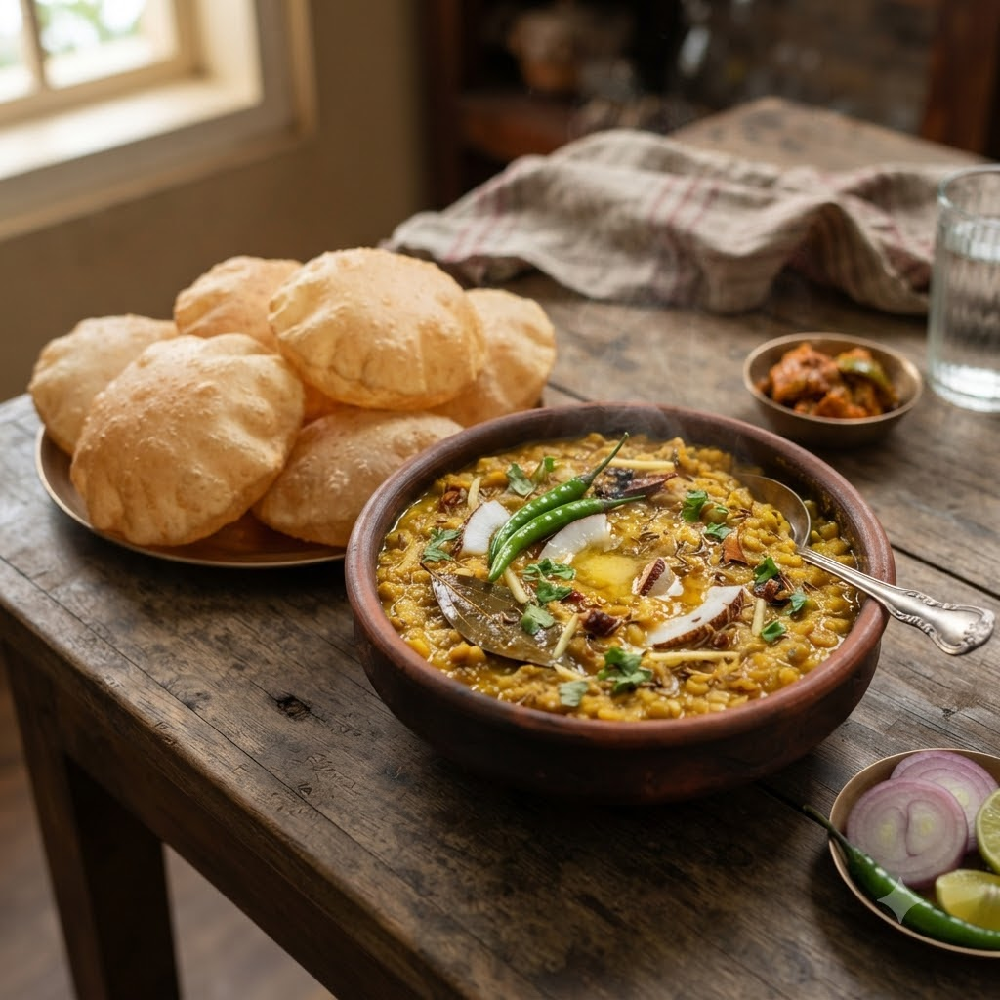

Cholar Dal (Bengal Gram Dal with Coconut)

Cholar Dal (Bengal Gram Dal with Coconut)
Chef Magic – Sauté + Boil Auto 32 min — Serves 4
Gluten-Free • Vegetarian • Bengali • High-Protein
🧑🍳 Chef Magic🍽 Serves 4
Prep ahead: Soak chana dal (Bengal gram) for at least 1 hour to shorten the cooking time.
Ingredients
- 1 cup chana dal, soaked 1 hour
- 2.5 cups water
- 1/2 tsp turmeric (haldi)
- 2 tbsp grated coconut
- 1 tbsp raisins
- 1 bay leaf (tej patta)
- 1 tsp cumin seeds (jeera)
- 1 dried red chilli (lal mirch)
- 1 tbsp ghee
- 1 tsp sugar
- Salt to taste
Method
1Add dal, water, turmeric and salt to the jar; select Boil (Speed 1–2, 100°C) and cook until dal is soft but grains hold their shape.
2Add ghee, cumin seeds, bay leaf and dried red chilli directly to the cooked dal; select Sauté (Speed 2–4, ~130–160°C) for 2 minutes to temper.
3Stir in coconut, raisins and sugar; sauté a further 2 minutes until fragrant.